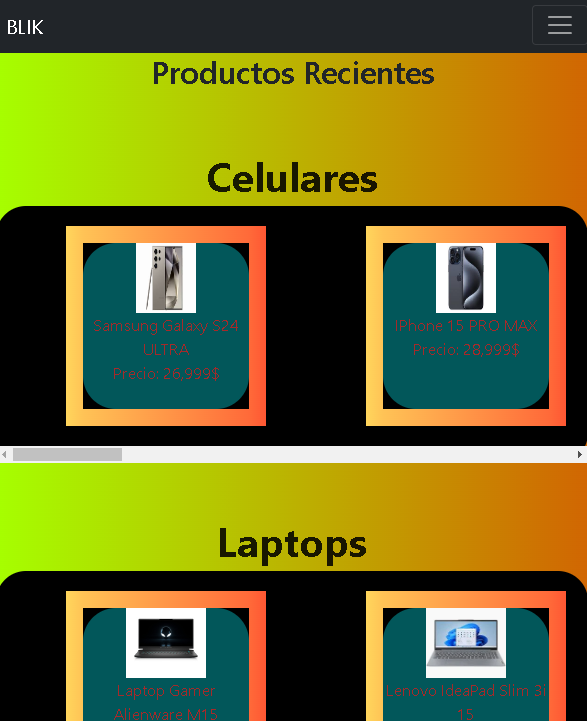
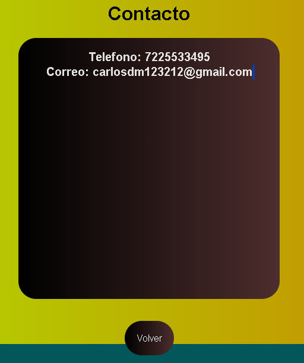
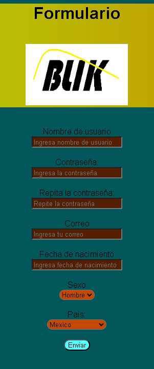

Carlos Daniel Muñiz Osorio
Ingeniero en sistemas computacionales
Sobre mi
Nombre completo: Carlos Daniel Muñiz Osorio
Edad: 18 años
Pais: Mexico
Idiomas: Español, Ingles
Telefono: 7225533495
Correo: carlosdm123212@gmail.com
Sitio web: www.blik.com
Direccion: Toluca de lerdo. Izcalli Blanco 43
Biografia
Soy un programador siempre he estado fascinado por la informática y la programación. Mi pasión por resolver problemas y crear soluciones innovadoras me ha llevado a perseguir esta carrera, Los lenguajes de programacion que mas domino son Java, C, JavaScript con HTML CSS un poco de php, este es mi portafolio digital que cree yo mismo usando HTML con CSS Pero para trabajar en un proyecto estoy dispuesto a seguir aprendiendo de cualquier lenguaje de programacion y de cualquier framework, tengo 2 certificados de NETACAD, Soy bueno para los trabajos en equipo y colaborar con otras personas para un proyecto en conjunto, Creo en la importancia de la comunicación efectiva y la capacidad de trabajar en entornos dinámicos y colaborativos. Mi objetivo es convertirme en un programador versátil capaz de desarrollar una amplia gama de aplicaciones y sitios web funcionales y atractivos.
Habilidades
HTML
CSS
Java
JavaScript
C
PHP
Certificados
Certificado NE
Certificado Iot
Mis Proyectos
  
Proyecto 1